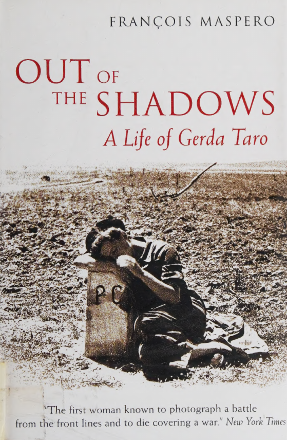

GERDA TARO
François Maspero propone in questa biografia la vita di una donna libera e impegnata che morì sul fronte spagnolo durante l'esercizio della sua professione
Dati
Visualizza i metadati (XML/DC)
| Titolo del libro: | Out of the shadows: A life of Gerda Taro |
|---|---|
| Anno di pubblicazione: | 2008 |
| Casa editrice: | Souvenir Press |
| Luogo di pubblicazione: | Londra, UK |
| Autore: | François Maspero |
| Lingua: | Inglese |
| Download diretto del PDF: | CLICCA QUA |
| Archivio online: | Internet Archive |